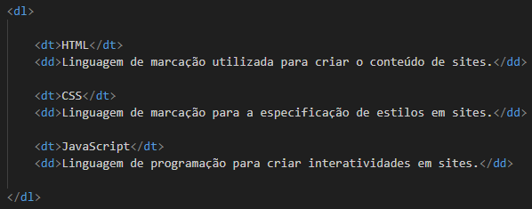

É possívell criar listas ordenadas usando a tag "ol"(Ordered List) e "li"(List Item).
São utilizadas para a criação de listas em que a ordem importa. Exemplo do uso da tag:
Podemos mudar o marcador das listas usando o type dentro da tag "ol".
Marcadores possíveis:
1 - padrão. Cria listas numeradas. Ex: 1,2,3,4...
A - Cria listas alfabéticas em maiúscula. Ex: A,B,C,D...
a - Cria listas alfabéticas em minúscula. Ex: a,b,c,d...
I - Cria listas com algarismos romanos em maiúscula. Ex: I,II,III,IV...
i - Cria listas com algarismos romanos em minúscula. Ex: i,ii,iii,iv...
Exemplo de como alterar o marcador:
É possível criar listas não ordenadas usando a tag "ul"(Unordered List) e "li"(List Item).
São utilizadas para a criação de listas em que a ordem não importa. Exemplo do uso da tag:

Podemos mudar o marcador das listas usando o type dentro da tag "ul".
Marcadores possíveis:
disc - padrão. Uma bolinha preta totalmente pintada.
circle - uma bola com a borda preta e sem preenchimento.
square - um pequeno quadrado preto totalmente pintado.
Exemplo de como alterar o marcador:
Podemos também misturar as duas listas e gerar uma lista desta maneira:
Pode-se criar uma lista de definições usando as tags "dl"(Definition List),
"dt"(Definition Terms) e "dd"(Definition Description)
Exemplo do uso da tag:
